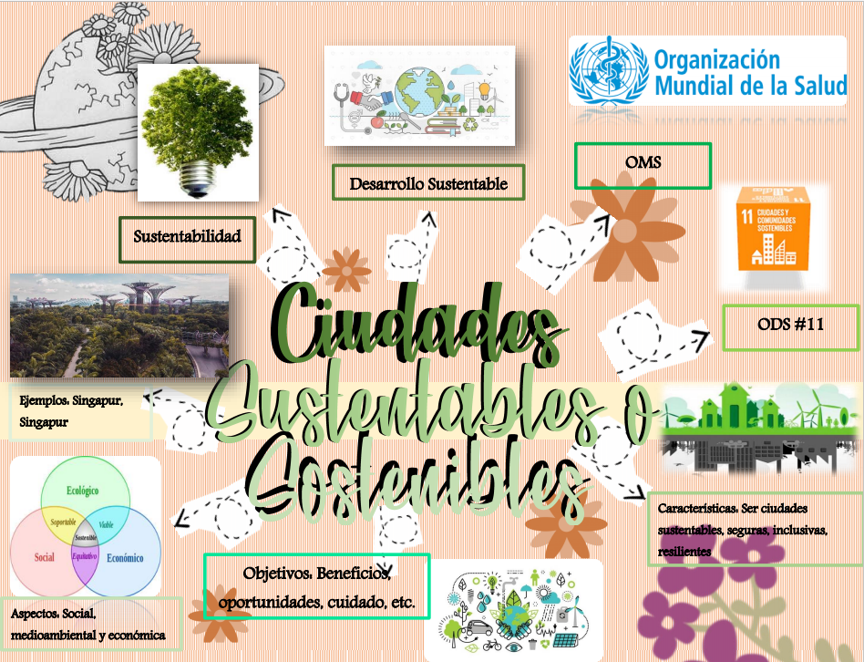

Integrantes Del Equipo
ESEM
Ecología y Medio Ambiente
Filosofía
Psicología II
Administracion II
Etimologias Grcolatinas II
Hablamos de la ciencia social más influyente y determinante, la que ha marcado el devenir de los tiempos durante prácticamente la totalidad de la modernidad. No obstante, por mucho que algunos se muestren convencidos de que ésta se basa en principios empíricos, la realidad es que es, sin lugar a dudas, una ciencia preeminentemente conjetural. Si les interesa convencerse de ello, basta con poner a prueba sus asunciones más básicas, examinar sus omniscientes modelos o, simplemente, reflexionar críticamente sobre el papel que juegan las querencias imprudentes de sus agentes más importantes: las personas y su irracionalidad. Aunque se empeñen sus expertos en pintar un panorama profundamente matemático, con sus apologías teóricas sobre la insolubilidad de sistemas complejos, acaban siendo los factores más tradicionales los que acaban por demostrar que, de hecho, somos demasiado complicados. De entre todas las ramas de la Economía, la que más nos fascina es su Historia. Hemos de decir que, afortunadamente, tuvimos un gran profesor que nos mostró lo cíclicas que son las crisis, lo similares que son sus causas y, lo más importante, lo difícil que es adelantarse a sus acontecimientos. Predecir en Economía es la mayoría de las veces como predecir el tiempo meteorológico: puedes ver el color, la forma y la amenaza de las nubes, pero nunca podrás ver con exactitud el momento de la descarga de sus truenos. El origen del mercado como mecanismo inherente de la organización social. Desafortunadamente, la mayoría de los economistas están demasiado ocupados con escorzar su onomástica, obnubilar al populacho con la complicación metodológica de sus modelos y epatar al mundo esclareciendo las causas de los shocks de oferta y demanda eso sí, siempre a posterior. No son ellos los que se preocupan de esclarecer la verdadera historia del origen de su deidad omnisapiente. Es más, ésta es una cuestión que ha dejado de interesar, porque procede de un pasado intemporal axiomáticamente tomado como imposible de restituir, un corolario que se justifica a través de la retórica clásica del intercambio reduccionista. Afortunadamente para los incrédulos, los antropólogos sí que se preguntan todavía por ello, aunque la atención general a su investigación sea extremadamente parva. Para entender los postulados en los que se apoyaba Adam Smith en su elaboración teórica del sentido común que hoy tenemos, es preciso remontarse a la época y su lugar de trabajo. La cosmología que entonces imperaba en Inglaterra y que se expandiría por el mundo más adelante sostenía que había un Dios que todo lo disponía para que funcionasen las leyes de la mecánica universal. Smith, que buscaba su ley universal, elaborando lo que hoy conocemos como la mano invisible del mercado autorregulado. Curiosamente, en su libro Teoría de los sentimientos morales, define esta mano como la “Providencia”. Había encontrado a su Dios económico. Una vez la Economía se asentó como disciplina, por fin expedita de la Ética y la Política, la disputa teológica pasó a un segundo plano. Se pasó a debatir sobre si lo que Smith sostenía con tanta convicción era cierto: un mercado es eficiente sólo si se deja a sus agentes operar de manera autónoma, sin la intervención del Estado. Los grandes intelectuales de la época, además de los clásicos posteriores que todavía se estudian en las universidades, emprendieron una vía que acabaría con una incesante producción literaria al respecto. La sugestión de su discurso era tal, que sólo unos pocos economistas anatemizados se atrevieron a discutirlo. La exaltación que siguió a la creación de “la Economía” fue incluso más lejos. Adam Smith aseguró que los mercados aparecieron incluso antes que los gobiernos y el dinero. Se dejó completamente de buscar si, efectivamente, el mercado es el medio natural del hombre. Para que el mercado se asiente dentro de una sociedad, hace falta dinero. Y ese dinero, estimados lectores, depende de un gobierno que lo respalde con metales preciosos, con promesas de pagar sus deudas o con una imposición legal o militar. Sí, también se hace dinero por decreto. Desafortunadamente, como suele pasar con los textos canónicos, todo el que cuestiona La Riqueza de las Naciones, sufre la censura de sus colegas, el ataque de los medios o, más asiduamente, la indiferencia de los individuos de un sistema profundamente enraizado.
En la actualidad en el municipio con la ciudad de Umán, su economía está íntimamente vinculada a la capital del estado. Se ha dado un proceso de industrialización importante que pone al sector secundario como la actividad principal del municipio. El turismo y el comercio ocupan también una posición significativa. En síntesis el municipio de Umán, está conformado económicamente por un nivel socioeconómico medio-bajo ya que la mayoría de las familias tienen solo lo suficiente para comer.
Regresar a menú

Regresar a menú
El papel que desempeña el hombre en los problemas actuales podemos mencionar una reflexión al cambio climático antropogénico, es decir, aquel que es consecuencia directa de la actividad humana, y en concreto por las emisiones de dióxido de carbono, urge reducir drásticamente todo tipo de agentes químicos contaminantes para preservar el medio natural y la salud humana, y por las convicciones personales para luchar contra toda clase de contaminación y es así, porque tanto el medio natural como la salud, son valores absolutos y valiosos por si mismos, al igual que la dignidad humana y la libertad. Este problema la humanidad lo ha afrontado tratando de reducir las actividades que emiten gases por ejemplo utilizar bicicleta en vez de auto o trasporte público, sembrar árboles, proteger los bosques con que se cuentan en la zona, reutilizar distintos productos y evitar los productos desechables. El desarrollo sustentable también es un problema que enfrenta el hombre, menciona que desde algunos años antes se venía diciendo en la comisión general del medio ambiente que estimulo la filosofía del desarrollo sostenible, de acuerdo ala filosofía, la sociedad habría de ser capaz efectivamente, de satisfacer sus necesidades en el presente respetando el entorno natural y sin comprometer la capacidad de las generaciones futuras para satisfacer las suyas, a partir de ahí se fueron asentando los principios básicos de lo que empezó a dominarse desarrollo sostenible, con el tiempo las palabras sostenibilidad y desarrollo sostenible ha ido apareciendo cada vez mas reiteradamente en los estudios académicos-filosóficos. También en los últimos años a tenido lugar en el mundo la emergencia de muchos eventos epidemiológicos dentro de los que se encuentran el descubrimiento de nuevas enfermedades infecciosas, así como enfermedades que muestran incidencias cada vez más altas convirtiéndose en problemas sanitarios de primera magnitud. El ser humano a luchado para descubrir e inventar nuevas vacunas que protejan al ser humano contra la infección estos problemas sanitarios puede obedecer comportamientos de alto riesgo como fallas en los sistemas por vigilancia epidemiológica. En lo que respecta mi localidad se ha promovido la planeación urbana sustentable, el manejo sustentable del agua y cuidado del medio ambiente y en el caso del surgimiento de nuevas enfermedades sea creado conciencia de tener una buena alimentación para enfrentar enfermedades a futuro.
Regresar a menú
La inteligencia emocional es un constructo que se refiere a la capacidad de los individuos para reconocer sus propias emociones y las de los demás, discriminar entre diferentes sentimientos y etiquetarlos apropiadamente, utilizar información emocional para guiar el pensamiento y la conducta, y administrar o ajustar las emociones para adaptarse al ambiente o conseguir objetivos como por ejemplo en estos tiempos la pandemia de COVID-19 en situaciones atípicas o extremas que estamos experimentando todos, es necesario aprender a saber cómo actuar ante la incertidumbre para no dejarse llevar por noticias falsas o el pánico. Se describen esta etapa como de “supervivencia” y puede ser peligrosa porque no ayuda a resolver problemas complejos ya que lleva al ser humano a ser reactivo, más que deliberador. Una opción para evitar caer en el modo de supervivencia es nombrar nuestras emociones, ya que tenerlas embotelladas pueden llevarnos a explotar de manera negativa. Una vez que se expresan los sentimientos, se vuelve más sencillo controlar las emociones e irlos normalizando. Es decir, observar las emociones en lugar de ser manejadas por ellas, pues en muchos de nosotros genera conciencia donde resulta difícil pensar que el mundo anterior a este año de la gran pandemia fuera un mundo sólido, en términos de sistema económico y social. El coronavirus nos arroja al gran ruedo en el cual importan sobre todo los grandes debates societales: cómo pensar la sociedad de aquí en más, cómo salir de la crisis, qué Estado necesitamos para ello; en fin, por si fuera poco, se trata de pensar el futuro civilizatorio al borde del colapso sistémico. También es importante recordar que cada persona maneja el estrés de manera distinta, tratar de entender al otro a través de la empatía, puede ayudarlos a manejar la situación mejor ya que son momentos de constante cambio e incertidumbre, y es de suma importancia mantener la calma, practicar la empatía, y buscar la manera de que esta crisis afecte lo menos posible nuestro día a día. Es necesario buscar reducir los niveles de ansiedad y enfocarse en lo que es realmente importante ósea nuestra salud, nosotros los humanos al afrontar esta pandemia muchos no estábamos preparados para lo que se venía, muchos temían a lo que probablemente nos acabaría o mataría, sin embargo muchos se han encontrado por si mismos como personas, amigos y/o familia esta pandemia tubo muchas cosas negativas pero también tubo cosas positivas, estar en familia es la mayor fortaleza que nos pudo haber dado esta pandemia, recuerda y observa tus emociones, acéptalas, no te asustes por sentirlas, permítete estar mal, normalízalo y compártelo con los tuyos. Si las emociones son intensas y te bloquean, si tus miedos anticipatorios y tu angustia dirigen tu día.
Regresar a menú
 Yucatán se ha visto muy afectado desdés el comienzo de la pandemia ya que la economía se vio muy afectada por los estragos que causo el covid-19, los grandes y pequeños negocios tuvieron que cerrar por las medidas de la contingencia que el gobierno puso para evitar la propagación del virus, poco a poco los negocios han vuelto abrir sus puertas gracias a las medidas de prevención que dio el gobierno del estado pero cada empresa durante el tiempo que estuvieron sin funcionamiento tuvieron que adaptar su proceso administrativo. Las empresas se empezaron a adaptar a la situación y las medidas para brindar el mejor servicio posible y tuvieron que rehacer o más bien modificar su planeación, organización, dirección y control, adaptándose a las nuevas necesidades de la sociedad, nos podemos dar cuenta en las cadenas de comida rápida ya que hicieron su servicio a domicilio y varias de estas empresas sacaron su app para hacer tu pedido de comida en línea sin la necesidad de ir a el local físico, todo esto fue un proceso de adaptación para dichos negocios, pero detrás de esas decisiones que tomaron las empresas se encuentra el proceso administrativo ya que les sirve para entender el comportamiento del mercado así como para tomar las mejores decisiones para que la empresa se mantenga a flote, detrás de todas las acciones tomadas por las empresas para mejorar su crecimiento siempre estará el proceso administrativo, ya que este le permite estar en constante mejora de los servicios y necesidades que la empresa necesita para mantenerse en el mercado ofreciendo sus servicios. En este tiempo podemos ver como la economía de Yucatán se ha estado recuperando gracias a que la mayoría de las empresas han tomado las medidas adecuadas para su reapertura y así poder seguir operando de la mejor manera posible. Con todo esto nos podemos dar cuenta de que si las empresas cuentan con una buena planeación, organización, dirección y control puede superar todas las dificultades que se le presenten a lo largo de su camino.
Yucatán se ha visto muy afectado desdés el comienzo de la pandemia ya que la economía se vio muy afectada por los estragos que causo el covid-19, los grandes y pequeños negocios tuvieron que cerrar por las medidas de la contingencia que el gobierno puso para evitar la propagación del virus, poco a poco los negocios han vuelto abrir sus puertas gracias a las medidas de prevención que dio el gobierno del estado pero cada empresa durante el tiempo que estuvieron sin funcionamiento tuvieron que adaptar su proceso administrativo. Las empresas se empezaron a adaptar a la situación y las medidas para brindar el mejor servicio posible y tuvieron que rehacer o más bien modificar su planeación, organización, dirección y control, adaptándose a las nuevas necesidades de la sociedad, nos podemos dar cuenta en las cadenas de comida rápida ya que hicieron su servicio a domicilio y varias de estas empresas sacaron su app para hacer tu pedido de comida en línea sin la necesidad de ir a el local físico, todo esto fue un proceso de adaptación para dichos negocios, pero detrás de esas decisiones que tomaron las empresas se encuentra el proceso administrativo ya que les sirve para entender el comportamiento del mercado así como para tomar las mejores decisiones para que la empresa se mantenga a flote, detrás de todas las acciones tomadas por las empresas para mejorar su crecimiento siempre estará el proceso administrativo, ya que este le permite estar en constante mejora de los servicios y necesidades que la empresa necesita para mantenerse en el mercado ofreciendo sus servicios. En este tiempo podemos ver como la economía de Yucatán se ha estado recuperando gracias a que la mayoría de las empresas han tomado las medidas adecuadas para su reapertura y así poder seguir operando de la mejor manera posible. Con todo esto nos podemos dar cuenta de que si las empresas cuentan con una buena planeación, organización, dirección y control puede superar todas las dificultades que se le presenten a lo largo de su camino.
Regresar a menú
Regresar a menú
Diego Ivan Angulo Balam
Angel De jesus Caballero Sosa
Edwin Antonio Mex Chan
Alyssa Estefania Pavon Payan
Jaime Jose Saenz Quintal
Monserrat Margely Sanchez Poot
6°H